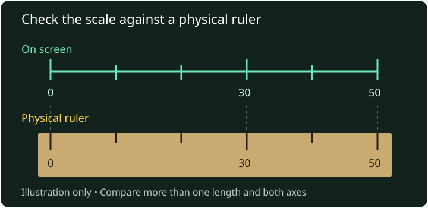

Calibration is a check, not a promise
A browser knows about pixels. It does not reliably know how many millimetres those pixels occupy on your particular display.
Screen Ruler turns a selected display size into a scale. Device presets, browser model hints and shared calibrations help choose that starting point. A physical reference is how you check whether the result matches the screen in front of you.
Calibrate against a known length
- Use the screen and browser settings you intend to measure with. Keep a desktop browser on one monitor and start at normal browser zoom.
- Choose your exact device if it is listed. Open the settings cog, select Calibrate, and find Ruler Scale.
- Place a physical ruler alongside the screen. Align the zero marks and compare a clearly visible length, such as 50 mm if it fits. Do not use an image of a ruler as the reference: its displayed size may also be wrong.
- Adjust the scale until the marks agree. Increasing the PPI value makes a given displayed length occupy more pixels. Decreasing it makes that length smaller.
- Check another length and the perpendicular axis. Rotate the device if you plan to use it that way and check again.

The Credit Card Outline in Calibrate provides another alignment aid, but use an object whose actual dimensions you know. Do not assume every card, badge or cut-down card has the same dimensions.
Read precision and physical accuracy are different
A readout can show a fraction or decimal more finely than you can position a handle. Rounded corners, edge shadows, glass thickness, touch movement and pixel spacing all affect where an edge appears to be.
A useful check is to compare the reading with a known length and calculate the relative difference:
Relative difference = |reading − known length| ÷ known length × 100%
For a hypothetical example, a reading of 51 mm against a known 50 mm span differs by 1 mm, or 2%. That is an illustration of the calculation, not a measured accuracy result for this site. Repeating the check at several lengths helps distinguish a scale mismatch from inconsistent alignment.
Screen Ruler has no published device-by-device accuracy certification or universal error bound. Use a suitable physical ruler, calipers or level when the required tolerance matters. An apparently precise number on the screen does not establish that tolerance.
When to check again
- Browser zoom or display scaling changes: the relationship between browser coordinates and physical pixels may change.
- A different screen or device: a saved scale belongs to the setup you calibrated, even if the browser copies settings to another device.
- Rotation or fullscreen changes: confirm the marks still match after changing the viewing mode you intend to use.
- A different browser or cleared site storage: the previous calibration may no longer be available.
- A case or support change when using the level: the phone may now sit at a different angle.
What is saved, and what is shared?
Calibration settings are stored locally when the browser permits storage. Choosing Share calibration sends the displayed device model and custom dimensions to the shared calibration service. Sharing is optional, and a community result needs the same reference check as a built-in preset. See Privacy for the data involved.